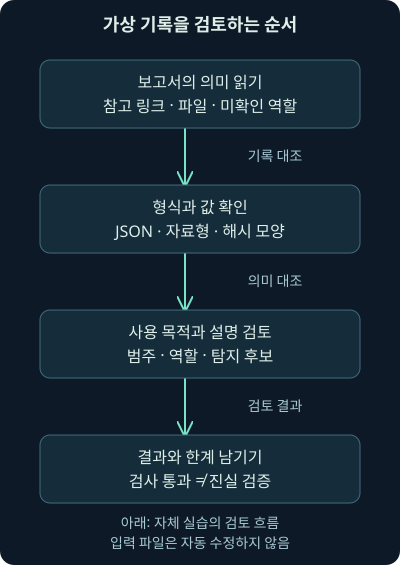
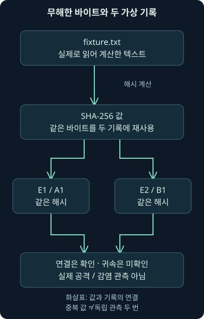
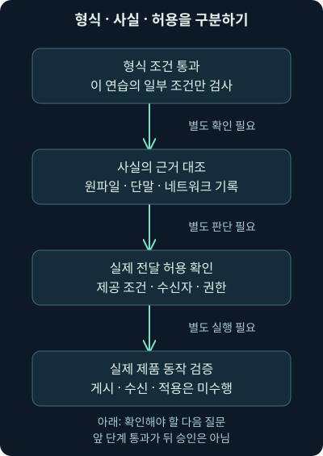

위협 정보 기록 검토와 상관관계 실습
첫째 날 14강. 자체 가상 보고서를 구조화하고 로컬 Python으로 검토·해시 상관관계·탐지 후보를 확인하며 사실과 권한의 한계를 구분합니다.
1. 입력을 마쳤다면 다음에는 무엇을 확인할까요?
13강에서는 MISP가 값·출처·관계를 어떻게 담는지 배웠습니다. 이번에는 보고서의 참고 링크가 탐지 대상으로 섞여 들어간 작은 실수를 직접 찾아보겠습니다. 실제 운영에서는 이런 실수가 무관한 주소 차단이나 불필요한 경보로 이어질 수 있습니다. 자료를 빨리 넣는 것보다 의미를 보존하는 일이 먼저인 이유입니다.
이번 14강의 범위는 자체 가상 보고서 읽기→기록 검토→같은 해시 찾기→탐지 후보 계획→해석과 한계 기록입니다. MISP 제품 화면·API·서버를 사용한 실습이 아닙니다. 원본 본 교재의 해당 실습 안내는 별도 워크북·가상 위키를 가리키지만, 확인한 자료 폴더와 관련 기록에서 그 원본 실습 자료를 확보하지 못했습니다. 원래 실습의 내부 단계와 정답을 재현했다고 주장하지 않습니다.
대신 직접 만든 무해한 텍스트·가상 보고서·JSON 기록·검사 프로그램을 제공합니다. 프로그램은 로컬 파일을 읽어 결과를 화면에 표시하며 네트워크 요청·게시·차단·입력 파일 수정을 하지 않습니다. 실제 악성 파일이나 외부 보고서에 접속할 필요가 없습니다.
2. 먼저 실습 자료의 역할을 구분합니다
택배를 정리할 때 상자에 붙은 설명, 실제 내용물, 검수 기록은 서로 다릅니다. 설명을 읽었다고 내용물을 검사한 것이 아니고, 검수 칸에 체크했다고 설명이 진실로 바뀌지도 않습니다. 이번 실습에서는 그 차이를 파일별로 나눠 두었습니다.
| 파일 | 역할 | 여기서 주장하지 않는 것 |
|---|---|---|
| report.txt | 직접 작성한 가상 보고서·과제 조건 | 외부 위협 보고서의 관측 결과 |
| fixture.txt | 실제 해시를 계산할 무해한 텍스트 | 악성 샘플·실행 흔적 |
| records-start.json | 실수를 넣은 시작 기록 | MISP 가져오기 형식 |
| records-reviewed.json | 검토 조건을 반영한 참조 답안 | 실제 게시·조사 완료 |
| review_intel.py | 일부 조건을 검사하는 로컬 프로그램 | MISP 서버·전체 스키마·진실 검증 |
| README.txt | 실행 방법·범위·한계 | 원래 워크북의 복제 |
각 파일을 같은 폴더에 저장하세요. [사용 안내](../../assets/network-security/lab14/README.txt), [가상 보고서](../../assets/network-security/lab14/report.txt), [무해한 텍스트](../../assets/network-security/lab14/fixture.txt), [시작 기록](../../assets/network-security/lab14/records-start.json), [참조 답안](../../assets/network-security/lab14/records-reviewed.json), [검사 프로그램](../../assets/network-security/lab14/review_intel.py)을 제공합니다. 코드가 어떤 일을 하는지 읽고 실습 범위 안에서 실행합니다.
3. 프로그램을 실행하기 전에 보고서를 읽습니다
보고서 A는 2026-11-01에 파일 이름 delivery-note.txt를 기술했다고 가정합니다. 보고서 B는 2026-11-02에 reference-copy.txt라는 다른 이름으로 같은 바이트를 기술했다고 가정합니다. 실제 두 파일을 수집한 사례가 아니라, 제공한 fixture.txt 하나의 내용을 두 기록에서 재사용하는 설정입니다.
두 가상 보고서의 참고 주소는 https://reports.example/notes/training-a와 https://reports.example/notes/training-b입니다. reports.example은 설명을 위한 예시 도메인입니다. 이 주소들은 공격자 서버가 아니라 참고 자료의 위치를 표현합니다. 클릭해서 값을 확인하는 과제가 아닙니다.
files.example도 언급되지만 공격 통신 역할이나 유효 기간을 확인했다는 설정은 없습니다. 두 보고서가 독립 관측인지, 같은 행위자·캠페인인지, 내부 단말에 해당 파일이 존재하는지는 미확인입니다. 기록을 만들기 전부터 이 미확인 항목을 적어 두세요. 빈칸이 불편하다고 추측으로 채우지 않는 연습입니다.
4. JSON에서 묶음과 개별 항목을 읽어봅시다
JSON, JavaScript Object Notation은 이름과 값으로 구성한 객체, 순서가 있는 목록 등을 표현하는 형식입니다. 중괄호 {}는 객체, 대괄호 []는 목록을 나타냅니다. 이름 뒤의 콜론 :은 그 이름에 대응하는 값을 연결합니다. 쉼표는 항목을 나눕니다.
events 목록 안의 E1·E2는 각각 가상 보고서의 묶음이고, 각 attributes 목록에는 개별 속성이 있습니다. E1의 A1은 파일 해시, A2는 역할 미확정 도메인, A3는 보고서 참고 링크입니다. E2에는 같은 파일 해시를 담은 B1이 있습니다. 합계는 이벤트 2개, 속성 4개입니다.
이 구조의 schema: training-cti-v1은 직접 만든 연습 형식이라는 표지입니다. MISP의 Event·Attribute 래퍼나 필수 필드를 구현하지 않았고 제품으로 가져오도록 만든 자료도 아닙니다. 개념에 같은 이름을 사용했다고 제품 API와 호환되는 것은 아닙니다.
5. 값이 같아도 역할과 사용 여부는 따로 둡니다
참조 답안의 A3는 아래와 같습니다. 전체 파일의 일부를 발췌한 것이며, 이 조각만 별도 입력 파일로 실행하는 것은 아닙니다.
{
"id": "A3",
"type": "link",
"value": "https://reports.example/notes/training-a",
"category": "External analysis",
"role": "reference",
"to_ids": false,
"seen_locally": false,
"review_state": "reviewed",
"comment": "Reference to fictional report, not malicious infrastructure."
}type은 값의 유형, category는 범주, role은 이 연습에서 정한 역할입니다. to_ids는 탐지용 사용 후보 여부를 표현하고, seen_locally는 내부 관측 여부를 나타내는 자체 필드입니다. review_state는 연습의 검토 상태, comment는 이유를 적는 칸입니다. 제품에 그대로 같은 필드가 있다는 뜻으로 읽지 마세요.
JSON의 false는 거짓을 나타내는 불리언, 참·거짓 자료형입니다. 문자열 "false"와는 다릅니다. 프로그램이 문자열을 참으로 오해하는 일을 막으려면 값뿐 아니라 자료형도 확인해야 합니다. 이번 검사기는 두 불리언 필드가 실제 불리언인지 검사합니다.
6. 시작 기록에는 어떤 실수가 있을까요?
시작 파일에서는 E1이 검토 대기이고, A3가 Network activity 범주·network-target 역할·to_ids: true로 잘못 들어 있습니다. A3의 설명과 검토 상태도 완료되지 않았습니다. 참고 자료를 공격 대상처럼 사용할 수 있는 상태인 셈입니다.
수정의 이유는 “정답 파일이 그렇게 되어 있어서”가 아닙니다. 보고서의 A3는 설명을 읽는 주소이므로 참고 역할을 보존해야 합니다. 역할·범주·탐지 후보 설정·설명을 함께 고쳐야 다음 사용자가 오해하지 않습니다. 검토 완료라는 글자만 바꾸면 원래의 의미 오류가 남습니다.

그림의 가운데 두 단계를 유심히 보세요. 형식이 읽힌다는 것과 그 값을 어느 역할로 사용할지는 다른 질문입니다. 검사 프로그램은 이 연습에서 예상한 조건을 확인하지만, 실제 보고서를 이해하고 검토한 책임까지 대신하지는 않습니다.
7. 무해한 텍스트의 해시를 먼저 계산합니다
SHA-256은 입력 바이트에서 256비트 길이의 요약 값을 계산하는 해시 함수입니다. 화면에 16진수로 표시하면 64글자가 됩니다. 16진수는 한 글자로 4비트를 표현하므로 256 ÷ 4 = 64입니다. 파일 이름이나 설명을 해시한 값과 실제 파일 바이트를 해시한 값은 구별해야 합니다.
실습 폴더에서 다음 명령을 실행할 수 있습니다. 작성 시에는 Python 3.12.14로 동일한 바이트를 직접 읽어 계산했습니다. 명령의 python이 다른 버전을 가리킬 수 있으므로 자신의 실행 환경을 먼저 확인하세요.
python --version
python -c "import hashlib; from pathlib import Path; print(hashlib.sha256(Path('fixture.txt').read_bytes()).hexdigest())"-c는 뒤의 문자열을 Python 코드로 실행하라는 뜻입니다. Path('fixture.txt').read_bytes()는 현재 폴더의 파일을 바이트 그대로 읽습니다. hashlib.sha256(...)이 해시를 계산하고, hexdigest()가 16진수 문자열로 바꿉니다. print는 그 값을 표시합니다. 이 명령은 파일을 실행하거나 외부로 보내지 않습니다.
제공한 파일의 실제 결과는 아래와 같습니다. 길어서 화면 안에서 가로로 스크롤할 수 있습니다.
19fb78b143afba673bd5b59aacee55c99907c85864d5560c44f4dde648a120e9편집기가 마지막 줄바꿈이나 인코딩을 바꾸면 다른 값이 나올 수 있습니다. 다운로드한 바이트와 직접 다시 작성한 텍스트가 같다고 가정하지 마세요. 일치가 확인되어도 이것은 내용 비교 결과이며 악성 판정이 아닙니다. 여기의 파일은 직접 만든 무해한 텍스트입니다.
8. 시작 기록을 검사해 봅시다
다음 명령에서 review_intel.py는 실행할 프로그램, check는 검사 모드, 마지막 이름은 읽을 입력 파일입니다. 세 부분을 나눠 보면 다른 자료에도 어떤 조건으로 실행했는지 기록하기 쉽습니다.
python review_intel.py check records-start.json
$LASTEXITCODEPowerShell의 $LASTEXITCODE는 바로 앞 외부 프로그램의 종료 코드입니다. 이 프로그램은 조건 통과 시 0, 검토 필요나 입력 오류 시 2를 돌려주도록 만들었습니다. 숫자 2가 모든 보안 도구에서 같은 뜻인 것은 아닙니다. 작성 시 시작 파일은 검토 메시지를 출력하고 실제 종료 코드 2를 반환했습니다.
출력에는 E1의 이벤트 검토 대기, A3의 속성 검토 대기, 범주·역할 검토, 참고 링크의 탐지 후보 오류 등이 나옵니다. 한 실수가 여러 검사를 동시에 어길 수 있으므로 메시지 수를 독립적인 결함 수나 위협 수로 세지 않습니다.
9. 검사기는 무엇을 검사하고 무엇을 놓칠까요?
validate 함수는 자체 형식 이름, 비어 있지 않은 이벤트·속성 목록, 식별자 중복, 날짜 형식, 일부 값과 역할·검토 상태를 확인합니다. sha256에는 소문자 16진수 64글자인지 확인하는 정규 표현식을 사용합니다. 정규 표현식은 문자열 모양을 표현하는 규칙입니다.
re.fullmatch(r'[0-9a-f]{64}', value)[0-9a-f]는 숫자 0~9 또는 a~f 한 글자, {64}는 그것이 정확히 64번 반복되는 조건입니다. fullmatch는 일부 조각이 아니라 문자열 전체가 맞아야 한다는 뜻입니다. 이 연습은 소문자만 받지만 실제 제품의 정규화 범위가 같다는 뜻은 아닙니다.
모양을 통과한 해시가 실제 파일에서 계산됐는지, 보고서 주장이 맞는지, 담당자가 정말 검토했는지는 이 검사로 알 수 없습니다. seen_locally도 불리언 형식만 확인하며 실제 단말 기록과 대조하지 않습니다. 결과의 첫 문장이 reviewed-shape-only; truth and permission not verified인 이유입니다.
10. 참조 답안과 내 수정본을 비교합니다
시작 파일을 복사해 records-working.json이라는 별도 작업본을 만들고, 6절에서 설명한 E1·A3 항목을 보고서에 맞게 수정해 보세요. 프로그램은 입력을 수정하지 않으므로 자동으로 답안 파일이 생성되는 것은 아닙니다. 원본을 남겨 어떤 판단을 바꿨는지 비교할 수 있게 합니다.
먼저 제공한 참조 답안을 검사하면 실행 환경과 검사 조건을 확인할 수 있습니다. 그다음 자신의 작업본을 같은 방법으로 검사하세요.
python review_intel.py check records-reviewed.json
python review_intel.py check records-working.json작성 시 참조 답안은 종료 코드 0이었습니다. 작업본은 독자가 직접 만드는 파일이므로 그 결과를 미리 통과했다고 말할 수 없습니다. 참조 답안의 0도 이 연습의 제한된 조건을 만족한다는 뜻입니다. 실제 조사 완료·공유 승인·MISP 게시 성공을 뜻하지 않습니다.
11. 같은 해시를 가진 두 기록을 연결합니다
다음으로 correlate 모드를 실행합니다. 상관관계는 관련될 수 있는 자료를 연결하는 것이며, 여기서는 검토 조건을 통과한 기록의 SHA-256 정확 일치만 다룹니다. 도메인·퍼지 해시·네트워크 범위 관계나 MISP의 전체 상관관계 엔진은 구현하지 않았습니다.
python review_intel.py correlate records-reviewed.json프로그램은 (유형, 값)을 묶음의 키로 삼고, 해당 키가 나타난 서로 다른 이벤트 ID를 모읍니다. 같은 이벤트에 같은 값을 여러 번 넣어도 이벤트 수가 부풀지 않도록 집합, 중복 원소를 한 번만 담는 자료 구조를 씁니다. 두 개 이상 서로 다른 이벤트가 있는 해시만 연결 결과로 표시합니다.
작성 시 출력에는 위의 실제 해시와 events=E1,E2; attribution=unknown이 표시됐습니다. 귀속, attribution는 활동을 특정 행위자 등에 연결하는 판단입니다. 이 프로그램은 귀속을 판단할 증거가 없으므로 unknown, 미확인으로 고정해 출력합니다.

그림에서는 파일 이름보다 내용의 비교에 초점을 맞추세요. 다른 이름으로 기술해도 바이트가 같으면 같은 해시가 나옵니다. 그러나 이번에는 애초에 하나의 무해한 내용을 두 기록에 재사용했으므로 독립적인 악성 활동을 두 번 발견한 결과가 아닙니다.
12. 조건을 바꾸면 연결 결과는 어떻게 달라질까요?
E2의 해시만 다른 64글자 값으로 바꾼 임시 사본을 검사하면 형식 조건은 통과할 수 있지만 같은 해시 연결은 출력되지 않습니다. 작성 시 이 변형을 별도 파일로 실행해 확인했습니다. “이 입력의 정확 일치 연결이 없다”는 좁은 결과입니다. 서로 다른 파일을 사용한 같은 활동이 있을 가능성까지 부정하지 않습니다.
반대로 실제 파일 바이트와 맞지 않는 64글자 값을 넣어도 모양만 통과할 수 있습니다. 이것이 자동 검사의 경계입니다. 보고서의 해시와 수집 파일의 해시를 실제로 계산·대조하는 절차를 생략하면, 잘못 복사된 값으로도 그럴듯한 관계를 만들 수 있습니다.
유형·시간·역할을 함께 보는 11강의 원칙도 여전히 필요합니다. 같은 문자열이 다른 유형이거나 관측 시기가 다르다면 별도 검토해야 합니다. 이번 단순 프로그램에는 시간 유효성·갱신·철회·부분 권한·원출처 독립성 판단이 없으므로 결과를 그 범위까지 확장하지 않습니다.
13. 탐지 후보 계획을 만들되 배포와 구별합니다
이제 plan 모드를 실행합니다. 여기서 계획은 로컬 화면에 후보를 표시하는 것뿐입니다. 센서 규칙도, 공유 파일도 만들지 않습니다.
python review_intel.py plan records-reviewed.json검토 조건을 통과한 속성 중 to_ids: true인 것만 (유형, 값) 집합에 넣습니다. A1과 B1은 같은 해시이므로 고유 후보는 1개입니다. A2의 역할 미확정 도메인과 A3의 참고 링크는 후보에서 제외됩니다. 작성 시 실제 출력의 마지막은 아래와 같았습니다.
PLAN unique-candidates=1; external-transfer=NOT-PERFORMED후보를 하나로 중복 제거했다고 원래 두 기록을 삭제하는 것은 아닙니다. 후보 목록은 값을 반복 전달하지 않기 위한 표현이고, 원기록에는 각 보고서의 날짜·출처·설명이 남아 있습니다. 실행 후 입력 파일의 해시가 바뀌지 않는 것도 별도로 확인했습니다.
14. 후보 0개라는 결과는 무엇을 뜻하나요?
별도 사본에서 모든 to_ids를 false로 바꿔 plan을 실행하면 고유 후보는 0개가 됩니다. 작성 시 이 조건 변경도 실제 실행했습니다. 입력 자료가 사라진 것이 아니라, 이번 계획에서 선택할 항목이 없어진 것입니다. “후보 0개=위협 없음”이 아닙니다.
실제 운영에서는 검토 미완료·만료·수집 범위 밖·유형 미지원·연동 오류·공유 제한 때문에 탐지 후보가 비어 있을 수 있습니다. 탐지 시스템의 규칙 수가 0인 것과 검색 결과가 0인 것도 다릅니다. 어떤 단계의 결과인지 먼저 적어야 합니다.
패킷에서 값을 찾지 못했을 때는 수집 위치·방향·시간·암호화·재조립·필터를 확인합니다. 단말에 파일이 없다는 검색 결과라면 검색 대상 경로·권한·수집 시점·삭제·보존 범위를 봅니다. 리졸버·방화벽·서버·프록시 기록과 서로 대조할 질문을 만들고, 관측하지 못한 영역을 정상으로 채우지 않습니다.
15. 공유 조건은 계획 명령으로 우회되지 않습니다
가상 보고서의 조건은 조직 내부 사용이며 TLP:AMBER+STRICT입니다. 참조 답안의 distribution: organisation-only는 이 연습의 문자열 표현입니다. 실제 MISP 배포 값의 정수 코드나 공유 그룹을 구현하지 않았습니다. 따라서 이 파일을 실제 동기화 설정으로 사용하면 안 됩니다.
검사기는 과제의 문자열이 바뀌었는지 확인할 뿐, 실제 수신자·계정 권한·허용 범위를 검증하지 못합니다. plan의 종료 코드 0도 외부 전달 승인이 아닙니다. 실제 도구에서는 이벤트·속성·객체·첨부·관측 피드백·외부 보강에 적용되는 전달 범위를 각각 검토해야 합니다.

그림 위의 형식 검사는 이번 프로그램이 일부 수행합니다. 가운데 사실 대조에는 실제 수집 자료가 필요하고, 아래의 전달 허용에는 제공 조건과 조직의 권한 판단이 필요합니다. 한 종류의 통과를 다른 종류의 승인으로 바꾸지 마세요.
16. 일부러 틀린 입력으로 검사기의 경계를 확인합니다
작성 시 검토 상태만 완료로 바꾸고 A3의 잘못된 역할·범주·탐지 설정을 남긴 사본은 종료 코드 2였습니다. 참·거짓 대신 문자열 "false"를 넣은 사본, 문법이 깨진 JSON, 필수 키가 빠진 사본도 2를 반환했습니다. 오류를 조용히 통과시키지 않는지 확인한 것입니다.
다른 방향의 한계도 확인했습니다. 참조 답안의 seen_locally를 근거 없이 true로 바꾼 사본은 불리언 형식이 맞으므로 0을 반환했습니다. 이 실행은 실제 관측을 발견한 것이 아니라, 검사기가 그 주장의 진실을 검사하지 못한다는 한계를 보여줍니다. 그 사본을 완료 답안으로 사용하지 않았습니다.
검사 조건이 더 많아져도 모든 의미 오류를 막지는 못합니다. 새로운 보고서의 역할이나 분류를 추가하려면 프로그램의 고정 조건도 바꿔야 합니다. 이 도구는 세 가지 유형과 정해진 가상 값에 한정한 교육용 검사이며, 일반 위협 정보 품질 평가기나 제품 호환성 검사기가 아닙니다.
17. 결과를 조사 기록으로 바꾸는 방법
좋은 결과 기록은 “검사 통과, 문제없음” 한 줄로 끝나지 않습니다. 가상 보고서 두 편을 직접 작성했고, 무해한 파일 바이트의 SHA-256을 계산했으며, 네 속성 중 두 속성의 해시가 같았다는 사실부터 적으세요. 검사 프로그램·입력 파일·Python 버전·종료 코드도 남깁니다.
가설은 따로 적습니다. 실제 사건이었다면 같은 파일의 재사용이나 보고서 재배포 가능성을 검토할 수 있습니다. 그러나 이번 실험은 같은 바이트를 두 기록에 넣은 설정이므로 실제 공격의 재사용 증거가 아닙니다. 동일 캠페인·행위자·감염·내부 실행 여부는 판단하지 않았다고 적습니다.
추가 증거가 필요한 질문도 붙입니다. 내부 파일 존재를 묻는다면 단말의 수집 파일·경로·시간을, 실행 여부는 프로세스·부모 프로세스·계정·명령 기록을, 통신 여부는 DNS·연결·방화벽·서버 기록을 대조합니다. 보강 서비스 조회나 외부 제출은 별도 전달 행위이므로 과제 밖에서 자동으로 수행하지 않습니다.
18. 실제 수행 범위와 공식 문서 연결
작성 환경에서는 Python 3.12.14로 제공 프로그램의 세 모드와 조건 변경을 실행하고 입력 파일이 유지되는지 확인했습니다. 제품 설치·API 호출·계정 생성·MISP 게시·피드 수신·VM·PCAP 분석·실제 악성 파일·외부 전송·차단은 수행하지 않았습니다. 자체 파일 실행 결과를 그런 작업의 결과처럼 표현하지 않습니다.
2026-11-04 확인한 MISP 2.5 API 문서에서 실제 제품 요청의 구조와 기능은 이 연습 형식과 별개임을 대조했습니다. 공식 보고서 등록 안내의 가져오기 검토 목적은 연결하되, 오래된 화면이나 예제의 값을 재사용하지 않았습니다.
공유 의미는 FIRST TLP 2.0, 제품의 실제 전달 조건은 공식 동기화 안내를 참고했습니다. 확인일은 2026-11-04이며, 설치본의 버전·권한·설정에 따른 실제 동작은 별도 시험이 필요합니다. 다음 15강에서는 여러 기록을 모아 검색·분석하는 SIEM의 원리로 이어갑니다.
19. 복습 질문과 바로 읽는 해설
질문 1. records-reviewed.json을 MISP에 그대로 가져오면 되나요?
해설: 자체 training-cti-v1 형식입니다. 실제 제품의 필수 구조와 스키마를 구현하지 않았으므로 가져오기 자료로 사용하면 안 됩니다. 개념을 시험하는 독립 예제입니다.
질문 2. A3가 참고 링크인지는 문자열 모양만으로 결정할 수 있나요?
해설: 보고서에서의 역할을 읽어야 합니다. 같은 URL 형식이라도 참고 자료·다운로드·통신 대상의 의미는 다릅니다. 범주·설명·탐지 후보 설정에 그 의미를 보존합니다.
질문 3. E1 검토 상태만 바꿨는데 왜 계속 코드 2인가요?
해설: A3의 역할·범주·설명·탐지 설정 오류가 남아 있기 때문입니다. 상태 이름만 고치는 것과 실제 내용을 검토하는 것은 다릅니다.
질문 4. SHA-256 결과가 64글자인 이유는 무엇인가요?
해설: 256비트를 한 글자당 4비트인 16진수로 표현하므로 256÷4=64글자입니다. 모양을 맞춘 문자열이 실제 파일 내용에서 계산된 해시인지는 별도 대조가 필요합니다.
질문 5. fixture.txt를 편집기로 다시 저장했더니 해시가 달라졌습니다. 악성인가요?
해설: 줄바꿈·인코딩·문자 변경으로 바이트가 달라졌을 수 있습니다. 원본 바이트와 비교해야 하며, 해시 차이를 악성 판정으로 해석하지 않습니다.
질문 6. 속성은 4개인데 탐지 후보는 왜 1개인가요?
해설: 참조 답안에서 to_ids가 true인 A1·B1만 선택하고 같은 유형·값을 중복 제거합니다. 도메인과 참고 링크는 제외되므로 고유 해시 후보가 하나 남습니다.
질문 7. 같은 해시가 두 기록에 있으니 같은 공격자가 보낸 파일인가요?
해설: 이번에는 무해한 같은 바이트를 의도적으로 재사용했습니다. 실제 보고서라도 원출처·파일 출처·행위·시간·재배포를 조사해야 하며 해시만으로 행위자를 확정할 수 없습니다.
질문 8. B1의 해시를 바꿔 연결이 안 나왔으니 서로 무관한가요?
해설: 이 입력의 SHA-256 정확 일치 연결이 없을 뿐입니다. 다른 파일을 쓴 관련 활동이나 검사하지 않은 관계는 여전히 있을 수 있습니다.
질문 9. 모든 to_ids를 false로 바꾸면 위협도 사라지나요?
해설: 계획의 선택 조건만 바뀝니다. 자료와 실제 활동은 바뀌지 않습니다. 후보 수·경보 수·실제 위협 수를 같은 값으로 취급하지 않습니다.
질문 10. plan이 코드 0이면 외부 공유가 승인된 것인가요?
해설: 화면에 로컬 후보를 표시했을 뿐입니다. 실제 전달도 권한 검증도 없었습니다. 제공 조건·수신자·제품 설정과 조직의 승인 절차를 별도로 확인해야 합니다.
질문 11. 근거 없이 seen_locally를 true로 바꿔도 통과한 이유는 무엇인가요?
해설: 검사기는 해당 필드의 불리언 자료형만 확인합니다. 실제 단말·네트워크 기록과 연결하지 않으므로 주장의 진실은 검증하지 못합니다. 통과 결과를 내부 관측의 증거로 사용할 수 없습니다.
질문 12. 로컬 실습 통과를 실제 MISP 연동 성공으로 보고하면 왜 문제인가요?
해설: 서버·API·권한·가져오기·게시·동기화·센서 적용을 실행하지 않았습니다. 독립 프로그램에서 확인한 범위만 보고해야 후속 담당자가 검증되지 않은 연결을 믿고 조사나 대응을 생략하지 않습니다.